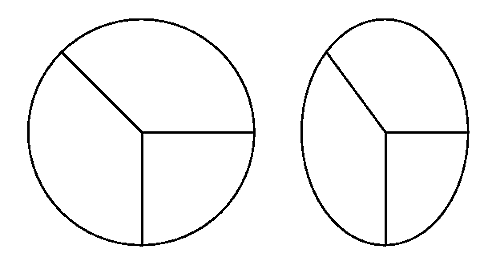

Bit maps are most useful when rapid and frequent movement is required, such as with icons and pointers. They are especially useful for restoring the contents of a window-for example, when an overlying window is removed. If you save the contents of a window in a bit map, you can restore the window contents simply by redisplaying the bit map when the window needs to be redrawn.
Using bit maps is also an effective method of erasing some of the screen contents. For example, you can save the image of the screen in a bit map at any time while drawing on the screen. If you continue drawing after saving the screen image, you can "erase" any drawing done since you saved the screen image by redisplaying the bit map.
Bit maps are not, however, the recommended way to store graphics that are going to be changed. Most changes to the bit-map contents mean that you have to re-create the bit map.
Bit-map images are device-dependent. Their appearance is affected by the shape of the device's pels and the device's color capabilities. For example, if the pels on one display measure 0.05 mm by 0.1 mm, but 0.1 mm by 0.3 mm on a second display, a circular bit-map pie chart drawn on the first display appears elliptical on the second. The following figure shows how a bit map appears on two types of displays.
Bit Map Shown on Two Types of Displays
Bit maps, particularly color bit maps, can also occupy large amounts of memory. The actual amount of memory occupied by a bit map is determined by both the size of the bit map and the number of bits used to describe each pel.